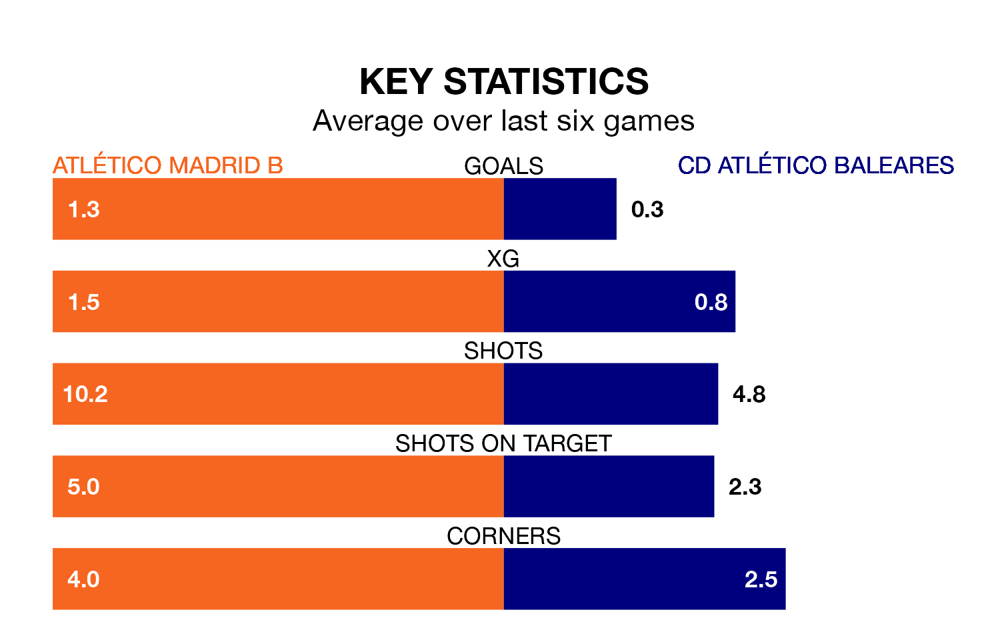

Struggling CD Atlético Baleares face Atlético Madrid B away at Miniestadio Cerro del Espino on Sunday looking to build on a win in their last league outing.
After securing all three points with a 2-1 victory over Antequera CF on February 11, Atlético Baleares sit 18th in Primera Division RFEF Group 2.
They travel to play an Atlético Madrid B side 13th in the standings, who lost in their last match, 4-1 against Córdoba.
With 14 goals in 23 games so far this season, Atlético Baleares are the league's third-lowest scorers with 0.6 goals per game. And they are conceding more than average, letting in 37 goals at a rate of 1.6 per game.
Atlético Madrid B, meanwhile, are above average scorers, with 1.5 goals per game, compared to a league average of 1.1. They have also conceded 1.5 goals per game.
The home team are in disappointing form in Primera Division RFEF Group 2, with one win and three draws from their last six games.
With a win and two draws over that period, the visitors' form is slightly worse – they have taken five points from 18, compared to Atlético Madrid B's six.
In Diego Vicente Bri Carrazoni, Atlético Madrid B have one of the league's most on-form strikers so far this season. He has notched seven goals in 21 appearances, to sit sixth in the scoring charts.
Atlético Baleares's top scorer, with seven goals in 18 games, is David Rodríguez Sánchez.
In the last five years, Atlético Madrid B and Atlético Baleares have played each other on four occasions. Atlético Madrid B won two of them and they drew twice.
On average, Atlético Madrid B scored 1.2 goals and Atlético Baleares 0.2 in those matches.
Their last meeting was on October 14, when Atlético Madrid B won 3-0 away.
Updated: 12:06 (UTC), 15/02/24